The CRM in 13 slides
What the CRM is and what it does, made from its demo: every company and person in it is made up. Use the arrow keys, or the buttons. Save as PDF prints one slide per page.
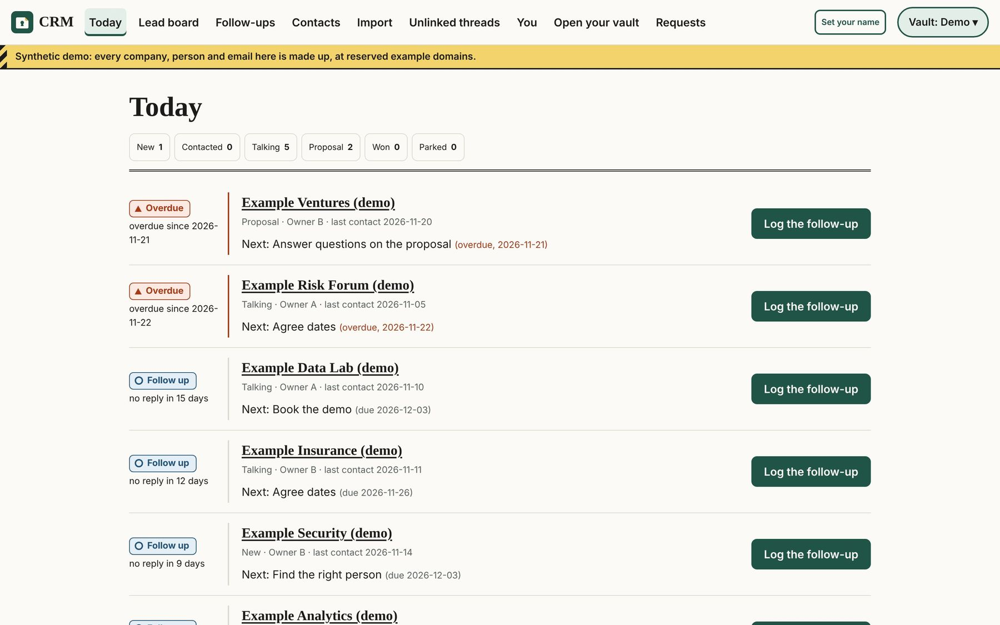

SovereignWeb.site
CRM
Many small CRMs, each kept in its own encrypted vault, opened with your own keys.
crm.tool.sovereignweb.site24 November 2026
The idea
Your contacts stay in your vault, not on our servers.
1
An encrypted vault per CRM
Companies, people, actions and keys are files in a small sgit vault. The server only ever holds encrypted bytes.
2
Opened in your browser
The page decrypts with your own keys, kept in this browser behind your passkey. Nothing to install.
3
A static site, no tracking
No server code, no cookies, no database. A demo with made-up data is always one press away.
Today
What to do today, in order
Overdue first
A next step past its due date comes to the top.
Then follow-ups
Mail with no reply for 5 days or more.
Then drafts
A draft waiting to be reviewed and sent.
One line per company
One button: log what you did.
Lead board
Every company, its stage, owner and next step
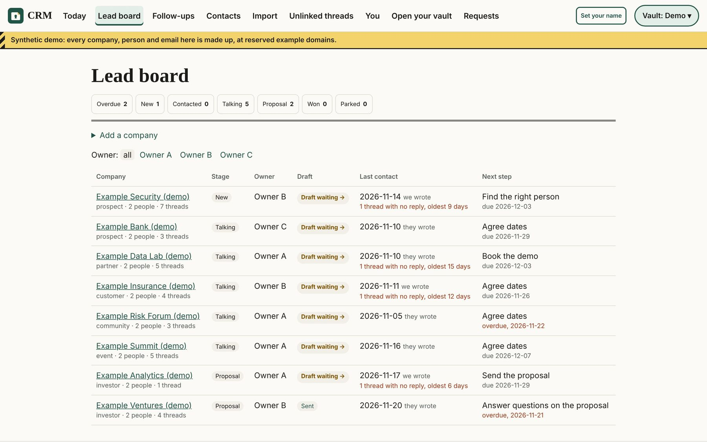
Six stages
New, contacted, talking, proposal, won, parked.
Filter by owner
See your own leads, or the team’s.
Draft and last contact
Worked out from the mail threads, never typed twice.
Logging an action
You see exactly what will be written
1
Log what happened: email, LinkedIn, call, meeting, message or note, who, which way and when.
2
The page shows the file and its contents. Nothing is written yet.
3
Write it: one commit to your vault. In the demo, this tab only.
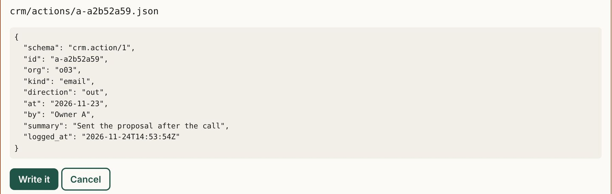
Follow-ups
No reply in 5 days? It comes back to you.
Waiting mail
Our last email with no answer for 5 days shows here and on Today.
A reply clears it
Log their call or answer, and the company leaves the list.
A nudge restarts the clock
Our own new contact counts from its date, 5 more days.
Notes never count
Only real contact, in or out, moves the clock.
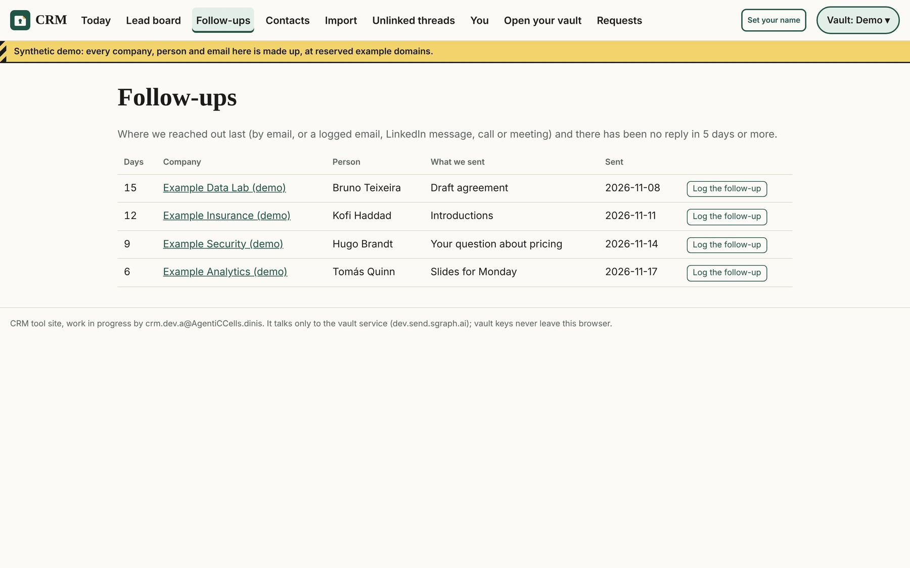
Many small CRMs
Not one big database. Lots of little CRMs, one per need.
Just you
A personal CRM for your own contacts. Only your keys open it.
Shared by two
A partnership or an introduction, kept between the two of you.
A team
A company’s pipeline, for the people who hold its key.
A project
An event or a campaign, opened for as long as it runs.
Each is its own vault with its own keys. The switcher in the header moves between the ones you hold.
Getting a vault: QR handover
Give your QR code, drop the one you get back
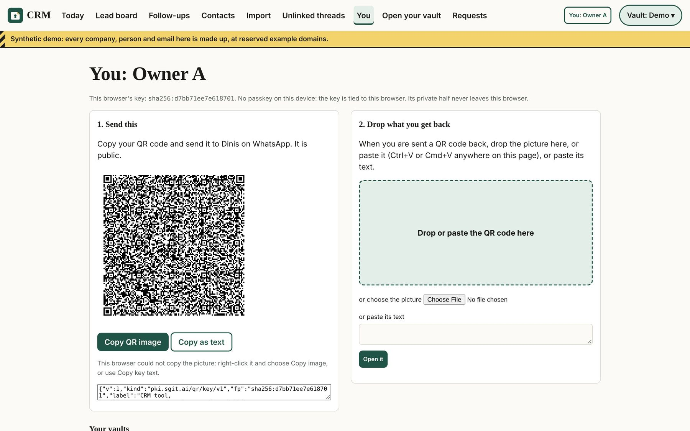
1
Log in. Your browser makes its key pair, behind your passkey.
2
Your QR code is copied by itself. It is public.
3
Send it on WhatsApp.
4
You get a sealed QR code back. Only your browser can open it.
5
Drop or paste it. The vault opens.
New: verified keys
Every contact can have a key you have checked
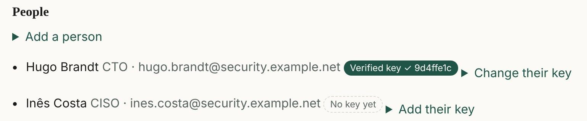
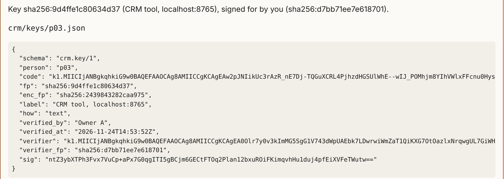
From their QR code
Drop the QR they gave you, or paste its text.
Checked, then signed
The page checks the key, and you sign for it with yours.
Checked again on every view
A record that does not check shows a warning.
On a phone, in the dark
The same CRM on every screen
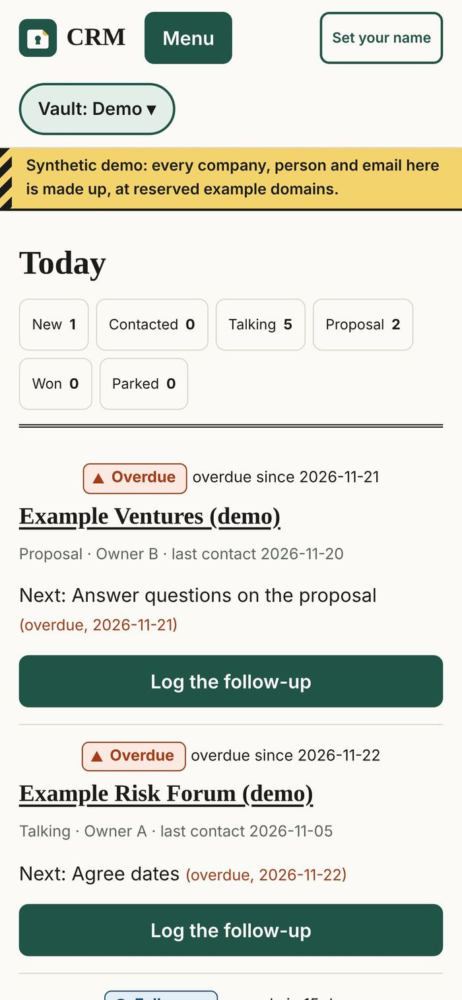
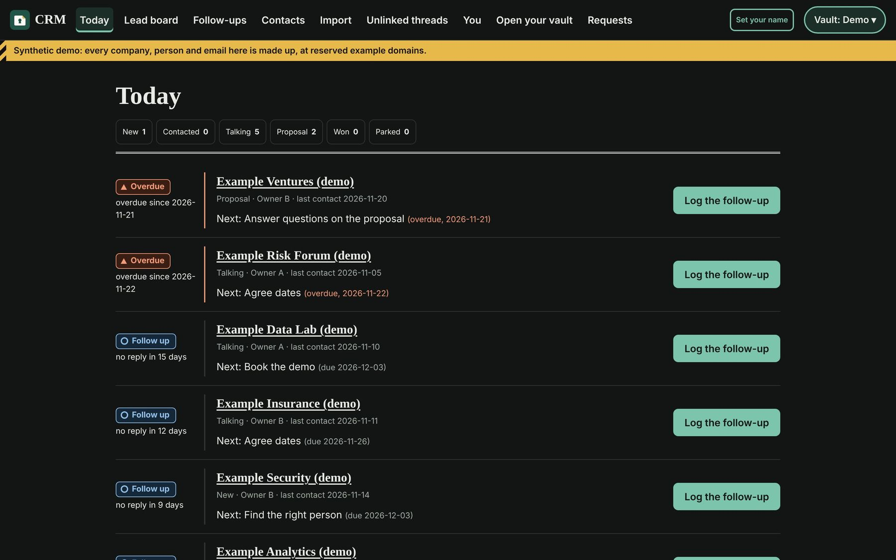
Phone
Stacked for a narrow screen, no sideways scrolling.
Dark
Follows your system setting.
Five design directions
The Day is live; four more to choose from
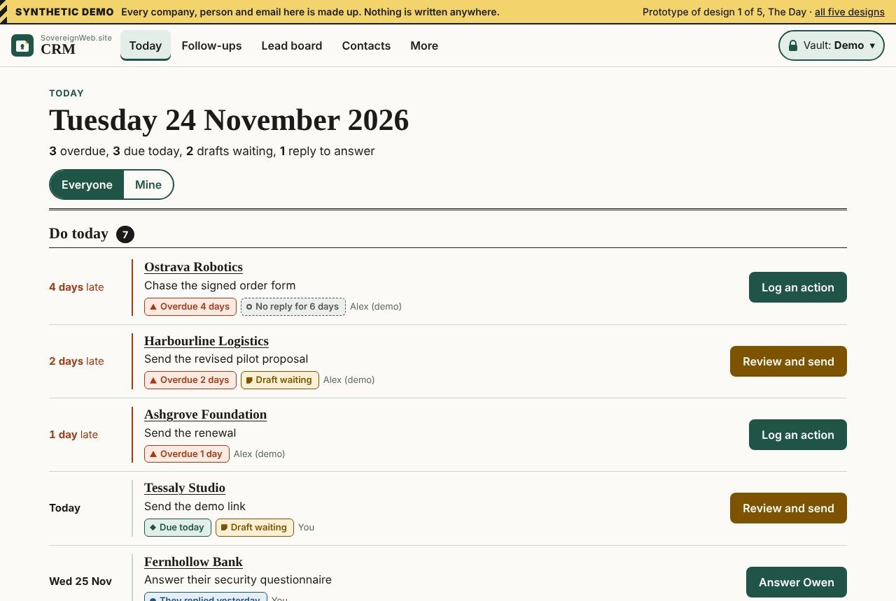
The Day, a diary of what to do. Now the working default.
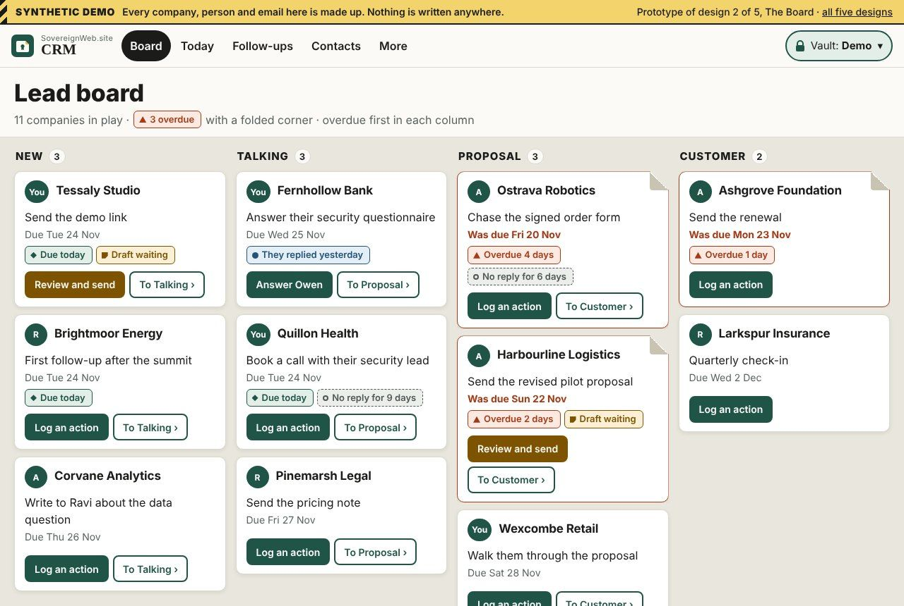
The Board, stages as columns
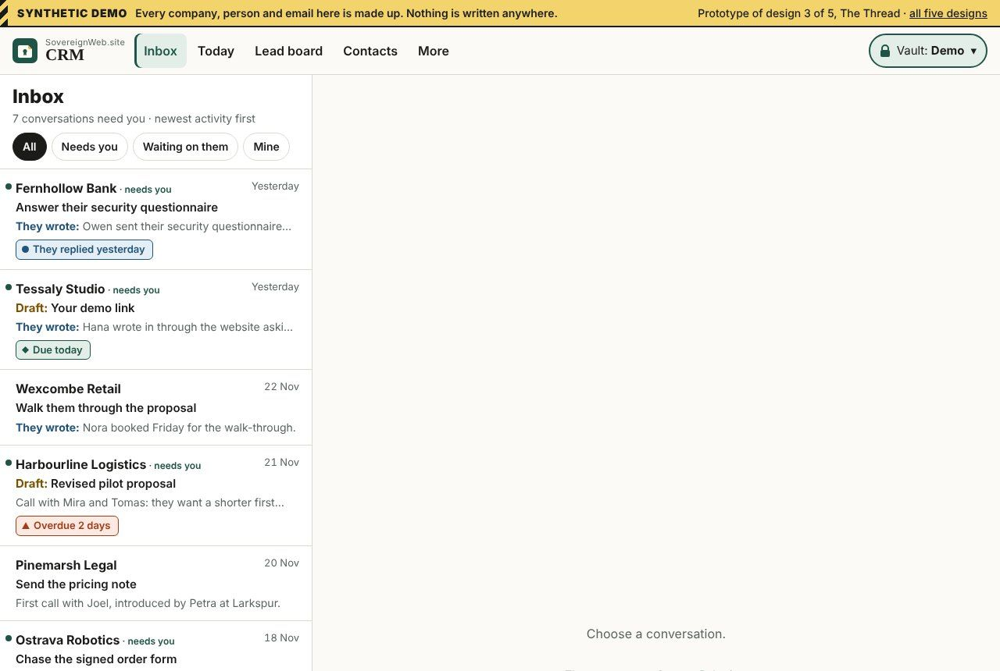
The Thread, a conversation
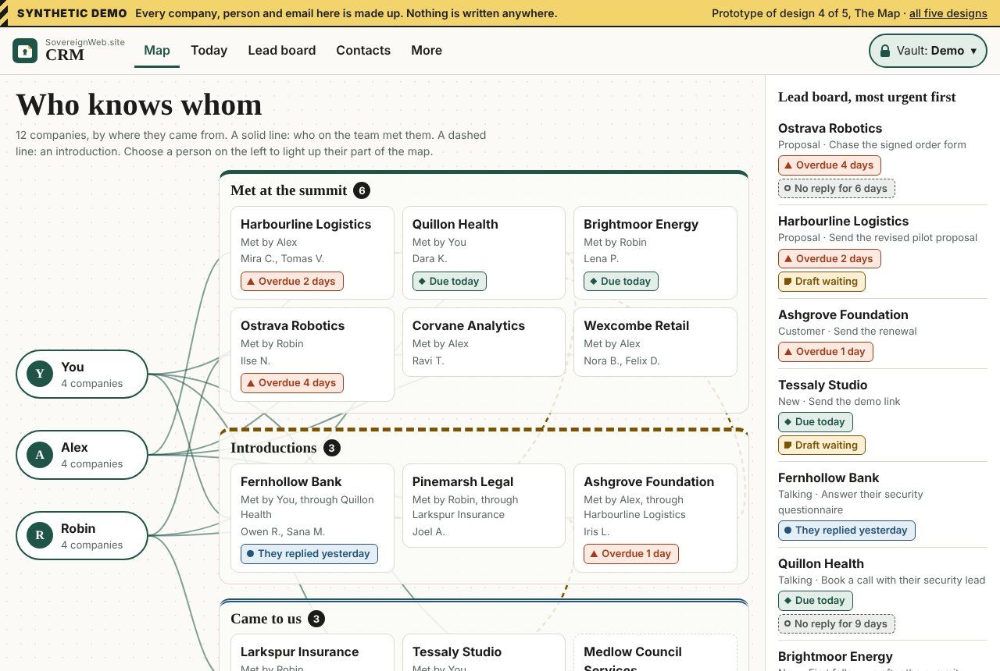
The Map, who knows whom
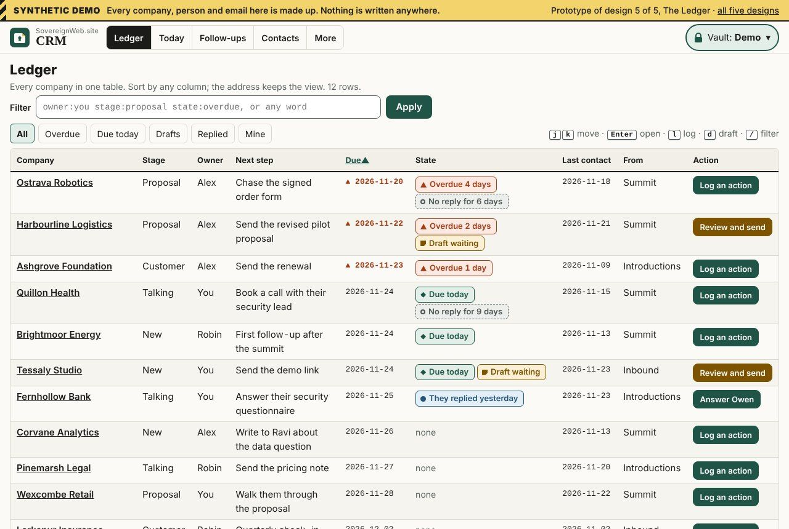
The Ledger, every action in rows
How it is built
Agents working in parallel, each in its own repository
Developer agent
The app, the vault code and the tests. Deploys the site.
Design agent
Designs and brand on its own site, sent as patches to the app.
Studio agent
Explainer videos, captured from the live demo. It found a follow-up bug.
The feedback loop: the Requests page sends a request signed with your key and sealed to the developer agent, into an append-only inbox. Answers come back sealed to you.
Try it
crm.tool.sovereignweb.site/app/
Start in the demo
Every company, person and email is made up. Try anything.
Then log in on You
Send your QR code, and drop the one you get back.
Or start your own
Open your vault, then Start a personal CRM vault.
Ask for anything
The Requests page reaches the developer agent.
SovereignWeb.site CRMCode Apache-2.0 · text CC BY 4.0